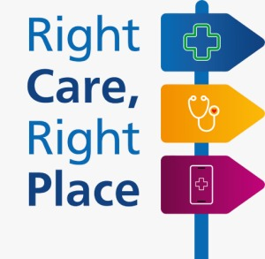

Everything you need on both sides of care
Finding the right caregiver isn’t just about availability, it’s about trust. This platform was built to make that process simpler and more transparent for everyone involved. Families can take their time exploring profiles, understanding real experience, and choosing someone who genuinely fits their needs.
to present their work clearly and be valued for what they actually do every day. From daily support to specialized care like physiotherapy and nutrition guidance, everything here is designed to connect people in a more direct and human way, without the usual friction. Because at the end of the day, care is personal. And finding the right person should feel that way.
✔ Verified caregivers
Profiles built for trust, clarity, and real experience.
✔ No agency fees
Connect directly without paying commissions.
✔ Better visibility
Caregivers get discovered by families faster.